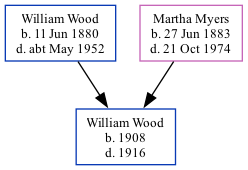

William Henry Wood 1908 - 1916
[ Home ] | [ Calendar ] | [ Surnames Index ] | [ Family History ]The child of William Wood (a plasterer) and Martha MyersWilliam Wood was born in North Shields, Northumberland, England in 19081. On Apr 2, 1911, he lived at 40 Burdon Main Row, Tynemouth, Tyne and Wear, England1.
He died in 1916 in Tynemouth.
Parents
- William Henry was born on Jun 11, 1880
- Martha Sarah Nicholson was born on Jun 27, 1883
Citations
- 1911 Census for England & Wales - Findmypast (was age 3 and the son of the head of the household)
Media
England & Wales births 1837-2006 - BMD/B/1908/2/AZ/000690/357
Family Tree
Generated by ged2site. Last updated on Nov 13, 2024